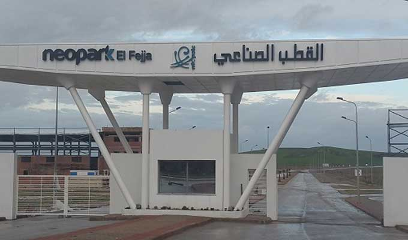
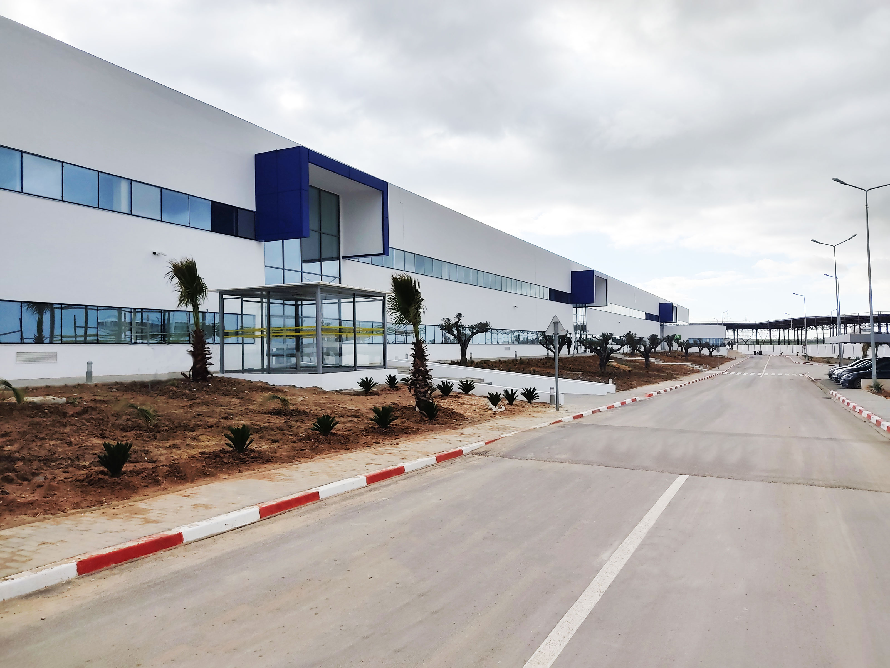
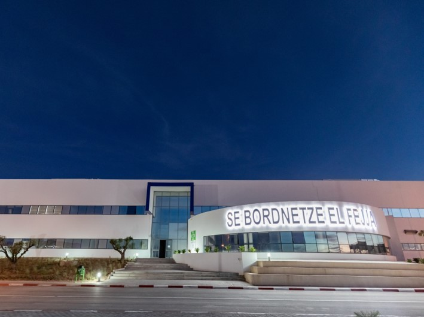

SEBN-MA spécialisé dans la fabrication des faisceaux électriques pour l’industrie
Automobile et filiale du groupe Sumitomo Bordnetze a connu depuis son démarrage
en 2001 à la zone franche de Tanger (TFZ) une forte croissance économique et sociale
en adoptant une politique ambitieuse de gestion des ressources humaines Attrayante et
valorisante pour les collaborateurs
